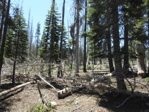
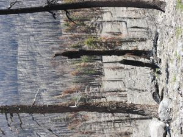

Camping at Lassen Volcanic National Park, CA
This Lassen Volcanic National Park camping gave me different experience!
There are many woods lying on the ground. We were told that we could pick woods and make campfire. This is unique since other places don’t allow picking wood. We were excited and we burned many woods. We did have a very good time!
However I was not so excited when we learned that Lassen had wildfire every year. Actually I was sad. We need to remove all these woods!
I will contact the National Park to clear the woods! I would like to ask the friends in California contacting government to take action!
I hope next time when we visit again, we will see no woods!
 
×